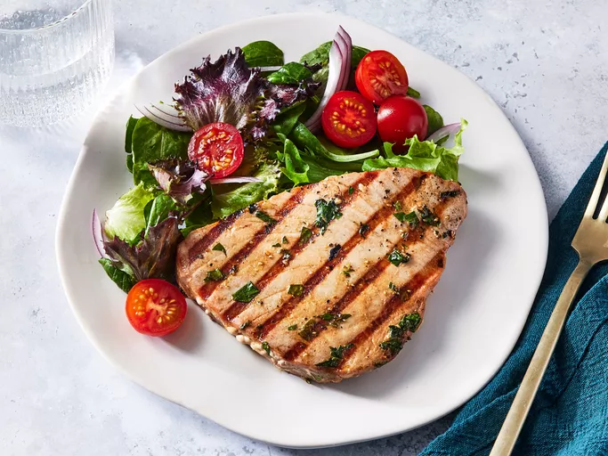

Home
Marinated Tuna Steak

Description
This tuna steak recipe includes a tangy marinade made with orange juice, soy sauce, and garlic for a wonderful taste.
Ingredients
- ¼ cup orange juice
- ¼ cup soy sauce
- 2 tablespoons olive oil
- 2 tablespoons chopped fresh parsley
- 1 tablespoon lemon juice
- 1 clove garlic, minced
- ½ teaspoon chopped fresh oregano
- ½ teaspoon ground black pepper
- 4 (4 ounce) tuna steaks
Steps
- Gather all ingredients.
-
Mix orange juice, soy sauce, olive oil, parsley, lemon juice, garlic, oregano, and pepper together in a large non-reactive dish until well combined. Place tuna steaks in marinade and turn to coat. Cover the dish with plastic wrap and marinate in the refrigerator for at least 30 minutes.
-
Preheat an outdoor grill for high heat and lightly oil the grate. Remove tuna steaks from the marinade and shake off excess; reserve marinade for basting.
-
Cook tuna steaks on the preheated grill for 5 to 6 minutes. Flip steaks and baste with reserved marinade. Continue cooking until desired doneness, about 5 minutes more. Discard any remaining marinade.
- Serve and enjoy!